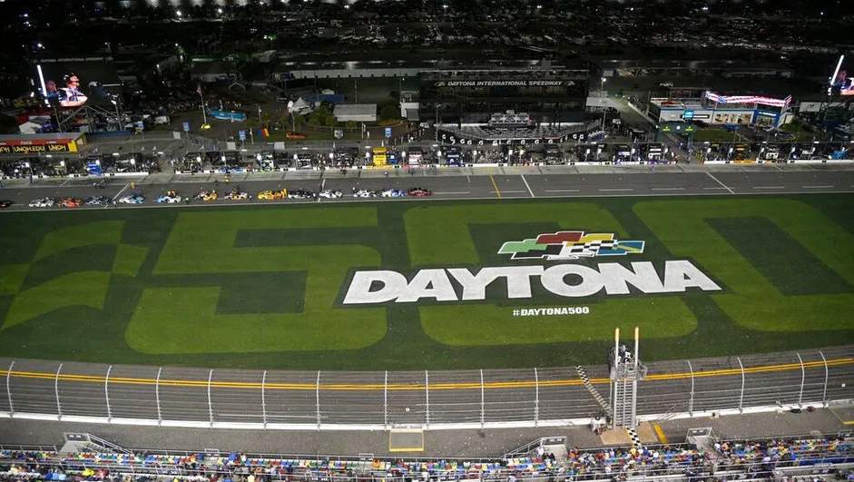

Nascida nos Estados Unidos, a NASCAR (National Association for Stock Car Auto Racing) tem uma origem curiosa: surgiu a partir de contrabandistas de bebidas durante a Lei Seca, que modificavam seus carros para fugir da polícia em estradas de terra. Oficializada em 1948 por Bill France Sr., a categoria se tornou um fenômeno cultural americano.
Historicamente, três pilotos dominam a prateleira de maiores campeões, todos com sete títulos na categoria principal (Cup Series): o "Rei" Richard Petty, o lendário Dale Earnhardt (o "Intimidador", símbolo máximo dos anos 90) e o hegemônico piloto moderno Jimmie Johnson.
Apesar de incluir hoje circuitos mistos e de rua, a alma da NASCAR está nos ovais.

O campeonato da Cup Series é longo, com 36 corridas anuais. O formato é único: cada corrida é dividida em três "Estágios" (Stages). O fim de cada estágio gera uma bandeira amarela programada e distribui pontos extras aos dez primeiros colocados.
Ao fim da temporada regular de 26 provas, os 16 melhores (focados principalmente no número de vitórias) avançam para os Playoffs, uma fase eliminatória alucinante de 10 rodadas. Na última corrida da temporada, os quatro finalistas disputam o título de forma simples: quem cruzar a linha de chegada na frente entre os quatro, é o campeão.
Imagem: Pelotão do modelo Next Gen em Daytona. Fonte: The Washington Post
Em 2022, a NASCAR introduziu o carro "Next Gen", uma quebra de paradigma na engenharia da categoria. Saiu o antigo eixo rígido e entraram a suspensão independente, difusor traseiro de fibra de carbono, rodas de porca única e um chassi padronizado projetado para suportar batidas fortíssimas. Por baixo do capô, motores V8 naturalmente aspirados de 5.8 litros rugem a quase 700 cavalos.
Como os ovais grandes exigem pé cravado no acelerador 100% do tempo, a tecnologia de corrida baseia-se no Drafting (o vácuo) — os carros andam colados uns aos outros (bumper-to-bumper) a mais de 300 km/h para cortar o ar mais rápido em conjunto.
Em 2016, a NASCAR adotou o "Charter System", semelhante às franquias das ligas americanas (NFL, NBA). Ter um charter (são 36 no total) garante ao carro vaga em todas as corridas e uma fatia da renda da TV, transformando as equipes em ativos comerciais estáveis, o que elevou drasticamente seu valor de mercado.
A economia do esporte baseia-se maciçamente em direitos de transmissão, com novos acordos bilionários fechados com FOX, NBC, Amazon e Warner. Equipes lendárias como Hendrick Motorsports, Joe Gibbs Racing e Team Penske operam com modelos de negócios que movimentam centenas de milhões de dólares anualmente, fortemente baseados também nos gigantescos patrocínios estampados em cada centímetro das latarias.